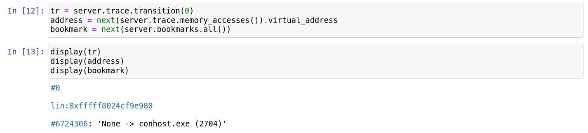
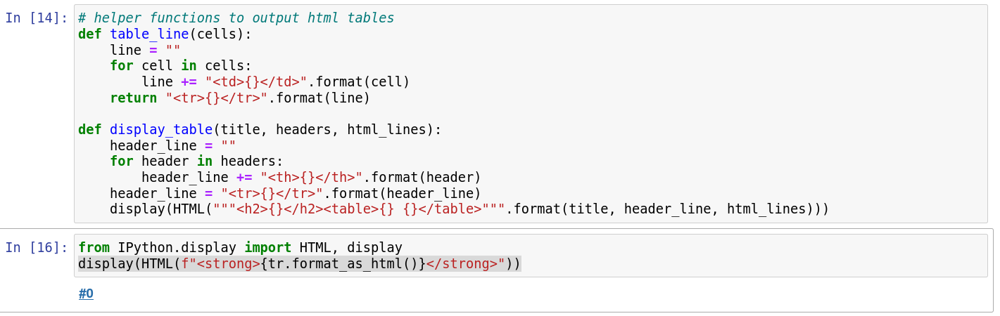
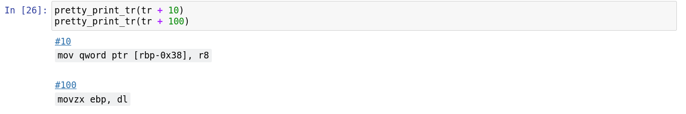
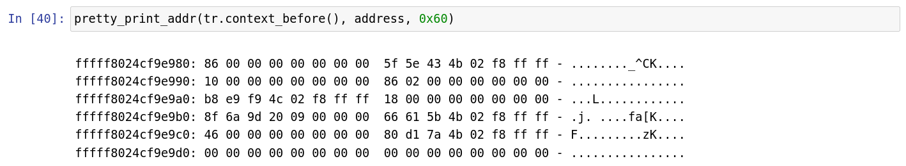

Displaying data nicely in Jupyter notebooks
Detecting if the script is executed in a notebook or not
def in_notebook():
"""
Detect if we are currently running a Jupyter notebook.
This is used to display rendered results inline in Jupyter when we are
executing in the context of a Jupyter notebook, or to display raw results
on the standard output when we are executing in the context of a script.
"""
try:
from IPython import get_ipython # type: ignore
if get_ipython() is None or ("IPKernelApp" not in get_ipython().config):
return False
except ImportError:
return False
return True
Displaying a transition, address as a synchronization link
display(tr)
display(address)
display(bookmark)
Sample output:

Displaying in tables
# helper functions to output html tables
def table_line(cells):
line = ""
for cell in cells:
line += "<td>{}</td>".format(cell)
return "<tr>{}</tr>".format(line)
def display_table(title, headers, html_lines):
header_line = ""
for header in headers:
header_line += "<th>{}</th>".format(header)
header_line = "<tr>{}</tr>".format(header_line)
display(HTML("""<h2>{}</h2><table>{} {}</table>""".format(title, header_line, html_lines)))
Pretty printing
Basics
from IPython.display import HTML, display
display(HTML(f"<strong>{tr.format_as_html()}</strong>"))
Sample output:

Transition
import reven2
from IPython.display import HTML, display
import re
import itertools
import html
all_regs = {}
for reg in reven2.arch.helpers.x64_registers():
all_regs[reg.name] = reg
def tokenize_string(string):
return re.split(" |dword|ptr|\\[|\\]|\\+|\\*|,", string)
def tokenize_instruction(transition):
if transition.instruction is None:
return []
return tokenize_string(str(transition.instruction))
def get_pretty_print_tr(tr, show_context=False, show_symbol=False):
output = ""
if show_symbol:
output += "<span>{}</span><br/>".format(html.escape(str(tr.context_before().ossi.location())))
output += tr._repr_html_()
output += " <code>{}</code>".format(str(tr).split(" ", 1)[1])
output += "<br/>"
if not show_context:
return '<p style="font-family:monospace" class="tex2jax_ignore">' + output + "</p>"
instr_elements = tokenize_instruction(tr)
done_already = []
print_data = []
for elem in instr_elements:
if elem in done_already:
continue
done_already.append(elem)
if elem in all_regs:
before = tr.context_before().read(all_regs[elem])
after = tr.context_after().read(all_regs[elem])
if before == after or elem in ["rip"]:
print_data.append("{} = {:x}".format(elem, before))
else:
print_data.append("{} = {:x} to {:x}".format(elem, before, after))
output += ", ".join(print_data) + "<br/>"
print_data = []
max_items = 4
accesses = list(itertools.islice(tr.memory_accesses(), max_items))
for acc in accesses:
elem = "{}[{:#x}]:{}".format("R" if acc.operation == reven2.memhist.MemoryAccessOperation.Read else "W",
acc.virtual_address.offset,
acc.size)
try:
before = tr.context_before().read(acc.virtual_address, acc.size)
after = tr.context_after().read(acc.virtual_address, acc.size)
if before == after:
print_data.append("{} = {:x}".format(elem, before))
else:
print_data.append("{} = {:x} to {:x}".format(elem, before, after))
except:
print_data.append(elem + " = ?")
if len(accesses) > max_items:
print_data.append("...")
output += ", ".join(print_data)
return '<p style="font-family:monospace" class="tex2jax_ignore">' + output + "</p>"
def pretty_print_tr(tr, show_context=False, show_symbol=False):
display(HTML(get_pretty_print_tr(tr, show_context=show_context, show_symbol=show_symbol)))
Sample output:

Address / Hexdump
Pretty print the content of a buffer at a specified address, in 0x10 increments. If passed a register, it will be dereferenced.
import reven2
from reven2.address import LinearAddress # shortcut when reading addresses
from IPython.display import HTML, display
def print_buffer(b, addr=0, col=16, highlights = []):
style_highlight = '<span style="background-color:yellow">'
style_highlight_off = '</span>'
output = '<code style="background-color:white">\n'
prev_all_zeros = 0
for i in range(int(len(b) / col)):
total_sum = sum(b[i*col:(i+1)*col])
for h in highlights:
if h in range(i*col,col):
total_sum = 0
total_sum_next = sum(b[(i+1)*col:(i+2)*col])
if total_sum == 0:
prev_all_zeros += 1
else:
prev_all_zeros == 0
if prev_all_zeros > 0 and total_sum_next == 0 and len(b) >= (i+2)*col:
if prev_all_zeros == 1:
output += "...\n"
continue
output += "{:016x}:".format(i*col + addr)
for j in range(col):
offset = j + i*col
if offset >= len(b):
break
if j % 8 == 0:
output += " "
total_sum += b[offset]
if offset in highlights:
output += style_highlight
output += "{:02x}".format(b[offset])
if offset in highlights:
output += style_highlight_off
output += " "
output += "- "
for j in range(col):
offset = j + i*col
if offset >= len(b):
break
c = b[offset]
if offset in highlights:
output += style_highlight
if c >= 32 and c <= 126:
output += "{}".format(chr(c))
else:
output += "."
if offset in highlights:
output += style_highlight_off
output += "\n"
output += "</code>"
display(HTML(output))
def pretty_print_addr(ctx, address, size):
if isinstance(address, reven2.arch.register.Register):
address = ctx.read(address)
if isinstance(address, int):
address = LinearAddress(address)
print_buffer(ctx.read(address, size), address.offset)
Sample output:
